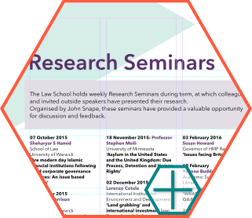
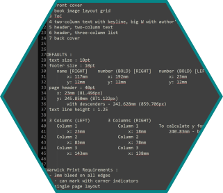

University of Warwick
Hired as the IT Learning & Support Officer for the School of Law, design was not initially within my job description. However, I found that many of the requests I was getting could be opportunities to stretch my skills in many new directions.
The University of Warwick had recently rebranded, and the School was making an effort to bring their site into line with these new guidelines. Aside from providing in-person tech support to faculty and staff, my main task was to rebuild existing web pages using custom bootstrap HTML and CSS templates.

Create marketing templates for desktop publishing for use both in print and online that are consistent with new University branding guidelines. Apply those templates to create posters for print, online, and display on large screens around campus. Make and share reference sheets containing summaries of Style Guide information that is needed on a daily basis. Ensure that all images used conform to licensing.
I was also encouraged to stretch my desktop publishing skills by beginning to lay out the 2016 Annual Research Report for the School. This report is handed out at conferences and recruiting events, as well as to the President of the University, to keep everyone up to date with the activities of the School.

Set up and publicize background policies that govern the standardization and centralization of information, reducing duplicated effort and streamlining information on the site. Removed dozens of duplicate pages, centralized information for each of the Research Centres, and rebuilt the Resource Database for the Centre for Human Rights in Practice.
For all pages of the website that are updated manually, I created templates within the HTML to ensure that all further information is added in the proper format and style.

Compile written instructions, documentation, and advice for staff and students on all systems, software, and processes. Document all internal IT processes to ensure consistent application of policies during administrative and academic transitions. Set up, manage, maintain, and keep an updated inventory of all departmental equipment along with all other hardware and software.